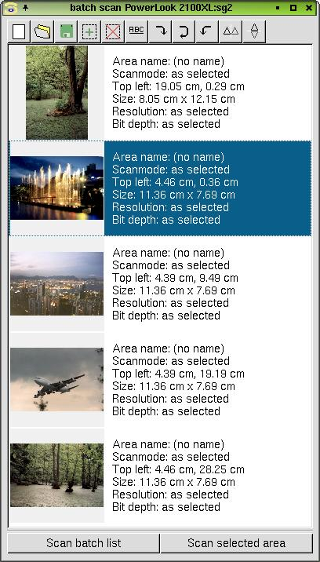
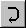
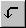
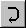
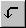
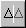
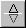

The batch scan window displays a list of selected areas and images (when
a preview scan has been done).

The images are updated when a new preview scan is done or the gamma correction
has changed.
The batch scan function can be used in all scanmodes (viewer, save, copy, fax, email)
and as gimp plugin.
Empty batch scan list:
Remove all selections form the batch scan list.
Open batch scan list:
Read a batch scan list from disk.
 Save batch scan list:
Save batch scan list:
Store batch scan list to disk.
Batch scan add area:
Adds the selected area to the batch scan list.
Remove selection from batch scan list:
Remove the selected area (marked) from the batch scan list.
Rename selection from batch scan list:
Rename the selected area (marked).
 

Rotate image 90, 180, 270 degree:


Rotate image 90, 180, 270 degree:
Rotates the image by 90, 180, 270 degree (clockwise).


Mirror image at vertical or horizontal axis:
Mirrors the image at vertical or horizontal axis.
Scan batch list:
Scans each image that is displayed in the batch scan list.
Scan selected area:
Scans the selected (marked) image.